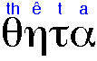
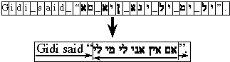
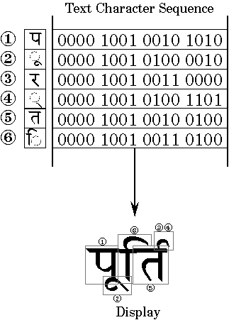

Mark Davis
Senior Technical Staff Member, IBM
January 1998
Originally published on http://www-106.ibm.com/developerworks/unicode/library/sun-ibm-java.html?dwzone=unicode
The emergence of the Internet and other distributed networks puts increasing importance on the ability to create global software -- that is, software that can be developed independently of the countries or languages of intended users -- and then translated for multiple countries or regions. Java 1.1 takes a major step forward in creating global applications and applets. It provides frameworks based on the UnicodeTM 2.0 character set -- the standard for international text -- and it provides an architecture for developing global applications, which can present messages, numbers, dates, and currency in any country's conventional formats.
However, when all is said and done, it may not be clear just how to go about making your program ready for localization with Java 1.1. This article outlines how to do that, what the strengths and limitations are of the current 1.1 support, and what to expect in the future. The discussion also applies to new programs; it is generally much easier to build a global program from the ground, than to go back later and retrofit it!
In the first section, we discuss how to convert your application into a global application. We then move on to look at what the current limitations in the JDK 1.1 are, and what the future may hold in store for us.
BackgroundBefore diving into the text, we will clarify some notation that we will be using. In the examples, changed text will be in italic, and comments will be in blue. We will also use the following terms:
Introduction
display string
A string that may be shown to the user. These strings will need to be translated
for different countries. Non-display strings, such as URLs, are used programmatically,
and are not translated.
locale
A name for conventions shared among a large set of users for language, dates,
times, numbers, etc. Typically, a single country is represented by a single
locale (and loosely speaking, you may use "country" and "locale" interchangeably).
However, some countries, such as Switzerland, have more than one official language
and therefore multiple locales.
global application
An application that can be completely translated for use in different locales.
All text shown to the user is in the native language, and user expectations
are met for dates, times, and other locale conventions. Also known as localizable
application. To globalize is to convert your program into a localizable
one. (Of course, with Java, you can also have global applets.
The JDK 1.1 implements the Unicode 2.0 character set with the Unicode character database version 2.0.14; for brevity, we will refer to this as Unicode 2.0.14. (Also, our use of the term application should be understood to include applets, unless otherwise noted.)
Note: On some browsers, the default font sizes are a bit small for the examples. You can reset the size to make them more readable. For example, in Netscape, use Options:General Preferences:Fonts.
Converting your Application
We will first take you through a step-by-step process of converting your application
into a global one. This will also guide you in making an application global
from the beginning. For more detailed information about each of the topics,
you should definitely consult the Java 1.1 International API documentation.
Thoroughly covering all the issues involved in developing global applications
is beyond the scope of this paper, but there are a number of resources available
on the Web or in print. See the references at the end of this document.
In the course of this section our examples are additive, with each successive one adding to code that may already have been converted to some extent. In those cases, the Old heading refers to the partially converted code, not to your original.
When the user starts up a global application, the default locale will be used for the display text and other user inter FACE elements. If the user changes the default locale (generally with some mechanism on the host system), then you can get a different user inter FACE language. (If you wish, you can go further, and support a multilingual application (or applet), which allows use of simultaneous multiple locales. We'll discuss this later.)
Translate Strings
The first step to take in preparing your program is to enable translation of
display strings by separating them from the rest of your code. With Java, this
is done via ResourceBundles . These provide a general mechanism that allows
you to access strings and other objects according to locale conventions. In
principle, they are fairly simple: They simply provide a mapping from <key,locale>
to <value>. However, they also supply inheritance among locale
resources that allows you to minimize duplication across countries, and gives
you a graceful degradation in case the exact locale does not have localized
resources.
Unfortunately, at this point in time, you will have to change your code by hand to make your strings translatable. You can do the bulk of the work with a PERL script if you want, but you will still have to check the results. The general problem with converting strings automatically is the difficulty in distinguishing display strings from non-display strings. Once the commercial Java development environments fully support resource bundles, this task should become easier, since they will make it easy to avoid mixing display strings in the code in the first place.
Resource bundles are very flexible -- so flexible that getting started may be mystifying. You can use list resource bundles, property resource bundles, or you can make your own. You can have fine-grained bundles or coarse-grained, and so on. To give you some direction, we'll start by showing one particular way to use resource bundles, and then we'll discuss some of the other options.
MyResources | Making an Empty ResourceBundle | |
| New | |
public class MyResources extends ListResourceBundle {
// boilerplate
public static ResourceBundle rb =
ResourceBundle.getBundle("MyResources");
public Object[][] getContents() { return contents; }
static final Object[][] contents = {
// insert localized {key, value}, pairs below
};
}
|
|
| Moving Strings to Resource Bundles |
| Old |
myCheckbox = new Checkbox("Clean cartridge before printing document");
|
// insert localized {key, value}, pairs below
...
|
| New |
myCheckbox = new Checkbox(MyResources.rb.getString("CleanCartridge"));
|
// insert localized {key, value} pairs here
{"CleanCartridge", "Clean cartridge before printing document"},
...
|
| Translating Resource Bundles |
| Old |
// insert localized {key, value} pairs here
{"CleanCartridge", "Clean cartridge before printing document"},
|
| New |
// insert localized {key, value}, pairs below
{"CleanCartridge", "Cleanez le cartridge de inque après que... "},
|
The way this is set up, the static rb will be initialized with the proper resource bundle according to the default Locale. This convenience allows us to refer to that bundle. You can use locale variables instead to reference the resource bundle, if you want.
If your resource bundle gets too large then you can subdivide it into other
resource bundles, such as MyPrintingResources, following the same
pattern. You can make this as fine-grained as you want, so that you only load
the resources for a part of your program when that part gets used. You can return
arbitrary objects, not only strings, since it is often easier (and sometimes
necessary, such as for graphics that need to be localized). For example:
| Moving Objects to Resource Bundles |
| Old |
myCheckbox = new Checkbox("Clean cartridge before printing document");
|
// insert localized {key, value}, pairs below
...
|
| New |
myCheckbox = (Checkbox) MyResources.rb.getObject("CleanCartridge");
|
// insert localized {key, value} pairs here
{"CleanCartridge", new Checkbox("Clean cartridge before printing document")},
...
|
You can also use a PropertyResourceBundle instead of a ListResourceBundle.
In that case, what you do is follow the same pattern, but instead of creating
a class, you put the {key, value} pairs into a PropertyFile. The
name of the property file is the same as the name of the ListResourceBundle
that you would have had. Since you don't have classes any more, put your static
rb in some convenient place, such as in your applet, and use that name for references
(for example MyApplet.rb.getString("CleanCartridge") ). However,
if you use a PropertyResourceBundle, be aware that you can only
extract strings -- and not other classes.
Resource bundles have a very simple interFACE. If you wanted to use other sources for your strings, you can always subclass to make your own resource bundle. For example, you could write one that accessed strings or serialized objects out of a database, or even over the Web. The basic requirements are to map keys to values, and provide for the inheritance of keys discussed above.
For more information, see the Taligent Java Demos and the JavaSoft International Specification.
ConcatenationMyResources.rb.getString("DeleteBefore")
+ someDate, the localizer is limited to modifying only the string, and
not the position of the date. If the language requires verbs to be at the end
of the sentence, the localizer is stuck.
You can replace concatenation by use of MessageFormats, which allow the localizer to position the variable information appropriately:
| MessageFormat Instead of Concatenation | |
| Old | |
myCheckbox=new Checkbox(MyResources.rb.getString("DeleteBefore")+ someDate);
|
|
// insert localized {key, value}, pairs below
{"DeleteBefore", "Delete all files before "},
|
|
| New | |
MessageFormat mf=new MessageFormat(MyResources.rb.getString("DeleteBefore"));
myCheckbox=new Checkbox(mf.format(new Object[] {someDate}));
|
|
// insert localized {key, value}, pairs below
{"DeleteBefore", "Delete files before {0}"},
|
|
Note: The reason for using the array of objects for the parameter is to allow multiple arguments. There will probably be convenience methods in the future to make this a bit smoother.
This new pattern string can then be localized, allowing rearrangement of the position of the argument {0} . If you want to, you could combine this into a single statement, using the static MessageFormat.format() :
| One-Line MessageFormat | |
|
New
|
myCheckbox = new Checkbox(MessageFormat.format(
MyResources.rb.getString("DeleteBefore"), new Object[] {someDate}));
|
|---|---|
Message formats can also be used to customize the precise format of dates, times, numbers, or currencies. If you only specify the position of the argument, then a default for the current locale will be chosen. However, you (for English) or the localizer (for other languages) can also more precisely control the format if you desire. This is done by adding additional keywords or patterns after the argument number, as in the following examples:
| Argument |
|---|
new Date(97,22,5); |
For more information, see the Taligent
Java Demos and the JavaSoft
International Specification. If you want to get only a string from the resources and create your own number
format, you can do it. However, you must do it in a a special way. You should
always get a number format using getInstance() , since a particular locale may
have a specialized subclass of NumberFormat . However, this subclass may not
allow use of a pattern string. So you need to check the type of the NumberFormat
you get before setting the pattern. (This should be simplified in a future release
of Java.) You can also programmatically alter number formats, such as by setting the
maximum or minimum number of decimals, or by deciding whether a thousands separator
is used. However, it is better practice to use a pattern string instead, since,
otherwise, you don't allow your localizers to customize the format. Of course, if you are formatting in a tight loop, you should move the creation
of the format out of the loop! You can also make your formats static to avoid
repeated creations. Instead of using methods on Integer, Float, etc. to do conversion from Strings
to numbers, dates, times, etc., use the appropriate formats again for parsing.
A Format will parse what it can produce (and more), so you can use the same
one for output and input. If you are creating your own display of date fields, such as for an alarm
clock widget, then you may want to display the different component fields (year,
month, date...) each in a separate TextField . Then you will want to use a Calendar
, which will convert the standard Date into its components according to local
conventions. Note: The order and choice of these fields may vary according
to local conventions. For example, the year may come at the start of the date
instead of the end, or the date format may even consist of very different information,
such as year + day-in-year . Currently, there is no simple way to get the order
of the fields in the format; that should be addressed in a future release. In
the meantime, if you intend to use FieldPosition to determine the position of
the fields with the text, be warned that there is a bug that makes that difficult:
consult Taligent's Web site for a workaround. Calendar has special support for clock widgets. For any given field, it can
tell you the result of incrementing or decrementing that field. It also supports
a variant form of incrementing/decrementing, called rolling, which gives
you the same effect as setting a field on your digital watch, in which changing
the minute field doesn't affect the hour: ...11:58, 11:59, 11:00, 11:01... For more information, see the Taligent
Java Demos and the JavaSoft
International Specification. Fix String Comparison Of course, if you are comparing strings in a tight loop, you should move the
creation of the collator out of the loop! You can also make your collator static
to avoid repeated creations. If a string is going to be compared multiple times, then use a CollationKey
instead. This preprocesses the string to handle all of the international issues,
and converts it into an internal form that can be compared with a simple binary
comparison. This makes multiple comparisons much faster. There are also a number of advanced features in Collators, such as the ability
to merge in additional rules at runtime or modify the rules. For example, you
can make "b" sort after "c", if you really wanted, or you can have "?" sort
exactly as if it were spelt out as "question-mark". You can also use collators
to do correct native-language searching as well as sorting, using a CollationElementIterator
. However, this code is not straightforward, and I would recommend waiting until
there are methods in Java to do it for you. For more information, see the Taligent
Java Demos and the JavaSoft
International Specification. Use Character Properties A number of methods are defined for the more common Unicode character properties.
In addition, you have full access to all the Unicode 2.0.14 character categories
by using Character.getType() . For more information, see the JavaSoft
International Specification. Going Word-by-Word
To find out whether a current index is at a word break, you can use the following
code (this should be in a convenience routine in a future release): You can use different break iterators to find word boundaries, line-wrap boundaries,
sentence boundaries and character boundaries. The latter may seem mysterious:
character simply means Unicode character, right? However, what native users
consider a single character may not be only a single Unicode character, and
user expectations may differ from country to country. Note: In the Java code base is a DecompositionIterator (it is currently
private). This actually walks through Unicode text and returns normalized characters.
For example, it maps the compatibility characters (such as the FULLWIDTH EXCLAMATION
MARK) at the end of the Unicode range onto their respective standard characters.
Once this is made public, then it can also be used in processing text. For more information, see the Taligent
Java Demos and the JavaSoft
International Specification. Unfortunately, the API for doing character code conversions is fairly limited
at this time, although the hidden implementation is quite extensive. There are
two places where this API surFACEs. In each of them, you use a string to identify
the non-Unicode character set that you are converting to or from. You can attach
an encoding to a stream ( OutputStreamWriter or InputStreamReader ) or you specify
on String the encoding when constructing from an array of bytes or when using
the getBytes method to convert to bytes. Note: Remember that the length of any conversion is not necessarily
the same as the length of the source. For example, when converting the SJIS
encoding to Unicode, sometimes one byte will convert into a single Unicode character,
and sometimes two bytes will. There is no programmatic way to get a list of the supported character sets,
other than to delve into the Sun directory in the Java source. Following is
a list of the current supported sets on NT, gotten in just that fashion. Unfortunately,
there is no guarantee that these will be present on every platform, nor is there
yet documentation of what some of the more obscure names in this list actually
refer to! "8859_1"
"8859_2" "8859_3" "8859_4" "8859_5"
"8859_6" "8859_7" "8859_8" "8859_9"
"Cp037"
"Cp273" "Cp277" "Cp278" "Cp280"
"Cp284" "Cp285" "Cp297" "Cp420"
"Cp424" "Cp437" "Cp500" "Cp737"
"Cp775" "Cp838" "Cp850" "Cp852"
"Cp855" "Cp856" "Cp857" "Cp860"
"Cp861" "Cp862" "Cp863" "Cp864"
"Cp865" "Cp866" "Cp868" "Cp869"
"Cp870" "Cp871" "Cp874" "Cp875"
"Cp918" "Cp921" "Cp922" "Cp930"
"Cp933" "Cp935" "Cp937" "Cp939"
"Cp942" "Cp948" "Cp949" "Cp950"
"Cp964" "Cp970" "Cp1006" "Cp1025"
"Cp1026" "Cp1046" "Cp1097" "Cp1098"
"Cp1112" "Cp1122" "Cp1123" "Cp1124"
"Cp1250" "Cp1251" "Cp1252" "Cp1253"
"Cp1254" "Cp1255" "Cp1256" "Cp1257"
"Cp1258" "Cp1381" "Cp1383" "Cp33722"
"MS874" "DBCS_ASCII"
"DBCS_EBCDIC" "EUC" "EUCJIS" "GB2312"
"JIS" "JIS0208" "KOI8_R" "KSC5601"
"SJIS" "SingleByte" "Big5" "CNS11643"
"MacArabic" "MacCentralEurope" "MacCroatian"
"MacCyrillic" "MacDingbat" "MacGreek" "MacHebrew"
"MacIceland" "MacRoman" "MacRomania" "MacSymbol"
"MacThai" "MacTurkish" "MacUkraine"
"Unicode" "UnicodeBig" "UnicodeLittle" "UTF8"
Only
to Unicode: "JISAutoDetect" You can support both in JDK 1.1, but most people don't find it worth the effort
to support a runtime multilingual user interFACE. Since Unicode is the character set for Java, the user can enter in multilingual
data (with some restrictions; see Limitations of JDK 1.1).
All of the formats, collators, and other international classes allow you to
pass an explicit Locale as a parameter. You can thus give the user the choice
of which locales to use for your display locale or for data. This allows you,
for example, to easily have French dates in one column of a table and German
dates in another. Multilingual Text Handling
To find out the list of locales available for a particular type of object,
such as a NumberFormat , look for a static on that object (or its base class)
called getAvailableLocales() . To then display the localized names of those
locales, such as in a Menu or List , use getDisplayName() . Listing Locales
The following table lists the locales that currently have localized international
objects (numbers, dates, etc.) in Java 1.1. If you create locales from the arguments
listed, you get the corresponding display names in the adjacent column. This
list is supplied only for comparison; you should always use code to find
the actual localized objects on your current system. Notice that if you don't
supply a specific country (or variant), a default will be chosen.
Pattern
Result
"Delete files before {0}"
Delete files before 6/13/97
1:00 AM
"Delete files before {0,date,long}"
Delete files before June
13, 1997
"Delete files before {0,date,yyyy.MMM.dd}"
Delete files
before 1997.Jun.13
Number and date formats can also be used separately, with similar control over
their formatting. (Number formats handle general numbers and currencies; date
formats cover both dates and times.) To globalize your program, replace the implicit
conversion of a number to a string with an explicit formatting call, and put the
pattern for the format into a resource bundle, as in the following example:
Number
Output
Old
myTextField.setText(myNumber);
// insert localized {key, value}, pairs below
...
New
NumberFormat nf=(NumberFormat)(MyResources.rb.getObject("PageNumberFormat"));
myTextField.setText(nf.format(myNumber));
// insert localized {key, value}, pairs below
{"PageNumberFormat", new DecimalFormat("#,##0")},
...
Number
Output from String Resource
Old
myTextField.setText(myNumber);
// insert localized {key, value}, pairs below
...
New
NumberFormat nf = NumberFormat.getInstance();
if (nf instanceof DecimalFormat)
((DecimalFormat)nf).applyPattern(MyResources.rb.getString("PageNumberFormat"));
myTextField.setText(nf.format(myNumber));
// insert localized {key, value}, pairs below
{"PageNumberFormat", "#,##0"},
...
try {
myNumber = Integer.parseInt(myTextField.getText());
} catch (NumberFormatException e) {
alertBadNumber(e);
}
try {
myNumber = nf.parse(myTextField2.getText());
} catch (ParseException e) {
alertBadNumber(e);
}
The standard comparison in String will only do a binary comparison. For display
strings, this is almost always incorrect! Wherever the ordering
or equality of strings is important to the user, such as when presenting
an alphabetized list, then use a Collator instead. Otherwise a German, for example,
will find that you don't equate two strings that he thinks are equal!
String
Comparison
if (string1.equals(string2)) {...
...
if (string1.compare(string2) < 0) {...
Collator col = Collator.getInstance();
if (col.equals(string1, string2)) {...
...
if (col.compare(string1, string2) < 0) {...
Using
CollationKey
// make up a list of sort keys
CollationKey[] keys = new CollationKey[sourceStrings.length];
for (int i = 0; i < sourceStrings.length; ++i) {
keys[i] = col.getCollationKey(sourceStrings[i]);
}
// now sort and stuff them into an AWT List
sort(keys);
List list = new List();
for (int i = 0; i < sourceStrings.length; ++i) {
list.addItem(keys[i].getSourceString());
}
If your code assumes that all characters of a given type (such as letters or
digits) are the ones in the ASCII range, then it will break with foreign languages.
Rather than test for particular ranges of characters, you should use the Unicode
character properties wherever possible.
Replacing
Range Tests
for (i = 0; i < string.length(); ++i) {
char ch = string.charAt(i);
if ((ch >= 'a' && ch <= 'z') || (ch >= 'A' && ch <= 'Z')) {
// we have a letter, do something with it.
for (i = 0; i < string.length(); ++i) {
char ch = string.charAt(i);
if (Character.isLetter(ch)) {
// we have a letter (including non ASCII), do something with it.
Replacing
Type Tests
for (i = 0; i < string.length(); ++i) {
char ch = string.charAt(i);
if (ch == '(' || ch == '{' || ch == '[') {
// we have an open brace, do something with it.
for (i = 0; i < string.length(); ++i) {
char ch = string.charAt(i);
if (Character.getType(ch) == Character.START_PUNCTUATION) {
// we have an open brace (including non ASCII), do something with it.
Word breaks in natural language are not only defined by spaces. For example, when
I search in this word processor for the word "checked" with the option "Whole
Words" checked, I find the last instance of "checked" even though it is not bounded
by spaces (there is a comma at the end). Even if you are using more sophisticated
tests for ASCII text, such as checking for various kinds of punctuation, you must
now deal with the wealth of possible characters in Unicode, and how they may behave
differently in different countries. By using a BreakIterator , you can avoid dealing
with these complexities.
BreakIterator boundary = BreakIterator.getWordInstance();
boundary.setText(stringToExamine);
int start = boundary.first();
for (int end = boundary.next();
end != BreakIterator.DONE;
start = end, end = boundary.next()) {
System.out.println(source.substring(start,end));
}
if (currentIndex < 0 || currentIndex > stringToExamine.length())
return false;
if (currentIndex == 0 || currentIndex == stringToExamine.length())
return true;
int discard = boundary.following(currentIndex);
if (boundary.previous() == currentIndex)
return true;
return false;
As long as you are writing a pure Java application using only Unicode characters,
you don't have to worry about the thousands of possible character sets out in
the world. However, if you are dealing with other data, then you will need to
convert in and out of Unicode.
// convert from ISO 8859-2 into Macintosh Central European
String string = new String(foreignBytes[],"8859_2");
otherBytes = string.getBytes("MacCentralEurope");
Foreign
Character Set Labels
"Default"
Only from Unicode: "UnicodeBigUnmarked" "UnicodeLittleUnmarked"
If you wish, you can go further and support a multilingual application
(or applet), which allows use of simultaneous multiple locales. First you should
understand an important distinction between multilingual data and multilingual
user interFACE:
NumberFormat nf = NumberFormat.getInstance(Locale.FRANCE);
// or
NumberFormat nf = NumberFormat.getInstance(new Locale("fr","",""));
numberLocaleMenu = new Menu("&Locale");
Locale[] locales = NumberFormat.getAvailableLocales();
for (int i = 0; i < locales.length; ++i) {
numberLocaleMenu.addItem(locales[i].getDisplayName());
}
| JDK 1.1 Locales | |||
| Arguments | Display Name | Arguments | Display Name |
|---|---|---|---|
"ar","","" "be","","" "bg","","" "ca","","" "cs","","" "da","","" "de","","" "de","AT","" "de","CH","" "el","","" "en","","" "en","CA","" "en","GB","" "en","IE","" "es","","" "et","","" "fi","","" "fr","","" "fr","BE","" "fr","CA","" "fr","CH","" "hr","","" "hu","","" "is","","" "it","","" "it","CH","" |
Arabic (Egypt) Belorussian (Belarus) Bulgarian (Bulgaria) Catalan (Spain) Czech (Czech Republic) Danish (Denmark) German (Germany) German (Austria) German (Switzerland) Greek (Greece) English (United States) English (Canada) English (United Kingdom) English (Ireland) Spanish (Spain) Estonian (Estonia) Finnish (Finland) French (France) French (Belgium) French (Canada) French (Switzerland) Croatian (Croatia) Hungarian (Hungary) Icelandic (Iceland) Italian (Italy) Italian (Switzerland) |
"iw" ," ","" "ja" ," ","" "ko" ," ","" "lt" ," ","" "lv" ," ","" "mk" ," ","" "nl" ," ","" "nl" ," BE","" "no" ," ","" "no" ," NO","NY" "pl" ," ","" "pt" ," ","" "ro" ," ","" "ru" ," ","" "sh" ," ","" "sk" ," ","" "sl" ," ","" "sq" ," ","" "sr" ," ","" "sv" ," ","" "tr" ," ","" "uk" ," ","" "zh" ," ","" "zh" ," TW","" |
Hebrew (Israel) Japanese (Japan) Korean (Korea) Lithuanian (Lituania) Latvian (Latvia) Macedonian (Macedonia) Dutch (Netherlands) Dutch (Belgium) Norwegian (Bokmål) (Norway) Norwegian (Nynorsk) (Norway,NY) Polish (Poland) Portuguese (Portugal) Romanian (Romania) Russian (Russia) Serbian (Latin) (Serbia) Slovak (Slovakia) Slovene (Slovenia) Albanian (Albania) Serbian (Cyrillic) (Serbia) Swedish (Sweden) Turkish (Turkey) Ukrainian (Ukraine) Chinese (China) Chinese (ROC) |
Although for most applications a runtime multilingual user interFACE is not worth the effort, if you do want to support it, you will restructure your application somewhat. Essentially, you must do one of the following:
Limitations of JDK 1.1
The JDK 1.1 release provides a great deal of support for European languages
and the countries that use them (we will refer to these locales as Western),
but due to time constraints there is only minimal support for the Far East,
and there is no adequate support for the Middle East and Southeast Asia (in
which we also include the Indian subcontinent). In addition, the font support
is very weak, even for English!
On the plus side, JDK 1.1 fonts have the capability to draw any Unicode characters, assuming that the host platform/browser supports drawing those characters. This requires that the appropriate fonts be installed on the host system. JDK 1.1 does have a mechanism for letting you combine many different native fonts together into a single logical font in order to cover a larger range of Unicode characters. It is currently done by means of editing one or more text font.properties files in a special format. JavaSoft has very good documentation about this process and its current limitations on the JavaSoft Web site at http://www.javasoft.com:80/products/jdk/1.1/docs/guide/intl/index.html .
On the minus side, Java support for fonts is still very weak. For one thing, there is no way to access the full set of fonts on a system; you are limited to a small set of logical fonts: Serif, SansSerif, Monospaced, etc. (By the way, to get the list of fonts, it is futile to search for that method in Font ; you must use Toolkit.getFontList ). For most applets this is not so bad; the few available logical fonts supported on each implementation are usually sufficient. However, for Java applications this is a real problem; you can't build a Java application that can list and use the available fonts on a system, something that the simplest of native applications can do.
Note: The logical font names will map to different fonts on different platforms; never make assumptions about metrics or coverage of these fonts.
The following are general deficiencies in the current international support. For background information on all the following topics, see the Unicode Standard.
Input Methods
The main issue for correct localization for CJK is input. Due to the complexity
of the character sets, there is a conversion facility that transforms input
from a small set of phonetic or component characters that the user types into
the actual CJK characters stored in the document. This facility is often called
an input method engine (IME) or sometimes a front-end processor
(FEP). An IME is generally quite complex. It often does sophisticated grammatical
analysis of the text, and it commonly
There are three main types of input support that each offer different levels of capability and require different degrees of application changes:
Currently, you are completely dependent on the quality of the Java implementation on the host platform or browser.
It is fairly easy for a host platform or browser to support both these features, at least on the major platforms that have CJK support, but, unfortunately there are no guarantees that this is done.
Moreover, there is no way for a Java program to support on-the-spot outside of TextArea/TextField, such as for word processors doing real rich-text editing with mixed styles and fonts. You can do over-the-spot support yourself by opening up your own small window that contains a TextArea, putting the window in the right position and setting the font yourself. However, you can't get a list of the available IMEs or choose which gets invoked.
Fonts
Large character fonts are handled in JDK 1.1. As discussed above, there is a
limited selection.
Neither Ruby nor Vertical text is in JDK 1.1. Both require special handling in text layout, but are fairly high-end features and so are not a problem for most programs.

Figure 1 Ruby
Figure 2 Bidirectional ReorderingMoreover, the general flow of objects will generally also be from right to left. This includes the flow of components with a FlowLayout , and tab stops in text, and on which side the box appears in a Checkbox . Text is also generally right-flush instead of left-flush. The localizer and developer need to have control of this flow direction on a component-by-component basis.
In addition, legacy data in other character sets may be stored in either visual or logical order, while Unicode uses logical order. So special character converters must be be written that can convert back and forth.
Southeast Asia
Figure 3
Moreover, Thai requires special word-break handling, since spaces are not used to separate words -- think of this as hyphenating within English words. It also needs special collation to sort some vowel-consonant combinations as if they were reversed. These languages may also employ simple input methods to alert the user to illegitimate combinations of letters.
JDK 1.2 and BeyondIn addition,Taligent is under contract to JavaSoft to assist in further improving the international system in general. In the JDK 1.2 release, this will involve supporting BIDI, providing a much more general text layout and font mechanism, as well as bug-fixing and incorporating our further performance improvements from our C/C++ libraries. After JDK 1.2, this will include support for Southeast Asian countries as well.
Much of this support, such as new calendars, will be transparent to the developer who is already using JDK 1.1 features. However, some, such as the input method support, may require changes to applications, especially applications that are doing their own text processing.
Some of the other possible future enhancements include the following:
Miscellaneous Possible Future Enhancements
Closing
With the Unicode support already in Java 1.1, the amount of work that you have
to do to globalize your application is much smaller than on other platforms.
You can get started right now to localize your programs, which will get your
application a long way towards world coverage: covering Europe, the Americas,
and (minimally) the Far East. As Java continues to evolve, you soon will be
able to localize to all world markets, building on the same base of code you
have now.
Acknowledgements
My thanks to Brian Beck, Ken Whistler, Laura Werner, Kathleen Wilson, Baldev
Soor, Debbie Coutant, Tom McFarland, Lee Collins, Andy Clark, David Goldsmith
and Dave Fritz for their review or assistance with this paper.
Pulling the JDK 1.1 international classes together on a very short schedule demanded a lot of hard work by people at Taligent, including Kathleen Wilson, Helena Shih Chapman, Chen-Lieh Huang, and John Fitzpatrick. People at the IBM NLTC also assisted, most especially Baldev Soor, but also Siraj Berhan and Stan Winitsky. And without the support and excellent feedback from people at JavaSoft, this work would not have been possible, especially from Brian Beck, but also from Asmus Freytag, David Bowen, Bill Shannon, Mark Reinhold, Guy Steele, Larry Cable, Graham Hamilton, and Naoyuki Ishimura.
About the author
Dr. Mark Davis is a Senior Technical Staff Member responsible for international
software architecture. Mark co-founded the Unicode effort, and is the president
of the Unicode Consortium. He is a principal co-author and editor of the Unicode
Standard, Versions 1.0 and 2.0. At various times, his department has included
software groups covering text, international, operating system services, Windows
porting, and technical communications. Technically, he specializes in object-oriented
programming and in the architecture and implementation of international and
text software.